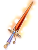
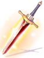
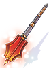
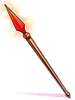
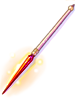
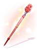
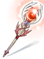
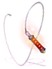
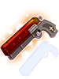

Crimson Weapons
Crimson Weapons are special kinds of weapons implemented as new drops from existing monsters.
They are level 3 weapons, requiring a base level of 70 to equip, and gain exponential bonuses in ATK and/or MATK with each refine level.
They also serve as base material for the newer Ancient Hero Weapons, which are then turned into even more powerful Patent Weapons.
Elemental Enchantment
Each Crimson Weapon (Bows, Revolvers, Rods and Staves are exceptions) come pre-enchanted when dropped by monsters with one of the eight elements.
Due to Patch 180, they can now have their element removed, or have a specific element given to them by for the price of 100,000 zeny and some materials. The weapons require being equipped, eg. you'd need to have a Monk class to change a Crimson Knuckle's element.
| Element | Materials |
|---|---|
| Neutral | Free |
| Fire |  30 Scorpion Tail 30 Scorpion Tail
|
| Water |  30 Snail's Shell 30 Snail's Shell
|
| Earth |  30 Horn 30 Horn
|
| Wind |  30 Rainbow Shell 30 Rainbow Shell
|
| Poison |  30 Withered Flower 30 Withered Flower
|
| Holy |  30 Horn of Hillslion 30 Horn of Hillslion
|
| Shadow |  30 Cursed Water 30 Cursed Water
|
Weapons
| Image | Name | Type | Description | Dropped by |
|---|---|---|---|---|

|
Crimson Dagger [2] | Dagger | 55 ATK
ATK + (Refine Level ^2) up to a maximum Refine of +15. If the user's base level is 70 or higher, |
|
|  | Crimson Saber [2] | One-Handed Sword |
85 ATK
ATK + (Refine Level ^2) up to a maximum Refine of +15. If the user's base level is 70 or higher, |
|
|  | Crimson Two-handed Sword [2] |
Two-handed Sword |
170 ATK
ATK + (Refine Level ^2) up to a maximum Refine of +15. If the user's base level is 70 or higher, |
|
| Crimson Two-Handed Axe[2] |
Two-handed Axe |
200 ATK
ATK + (Refine Level ^2) up to a maximum Refine of +15. Indestructible in battle If the user's base level is 70 or higher, |
||
|  | Crimson Mace [2] | Mace | 80 ATK
ATK + (Refine Level ^2) up to a maximum Refine of +15. Indestructible in battle If the user's base level is 70 or higher, |
|
|  | Crimson Spear [2] | One-handed Spear |
90 ATK
ATK + (Refine Level ^2) up to a maximum Refine of +15. If the user's base level is 70 or higher, |
|
|  | Crimson Lance [2] | Two-Handed Spear |
175 ATK
ATK + (Refine Level ^2) up to a maximum Refine of +15. If the user's base level is 70 or higher, |
|
| Crimson Bow [2] | Bow | 130 ATK
ATK + (Refine Level ^2) up to a maximum Refine of +15. If the user's base level is 70 or higher, |
||

|
Crimson Katar [2] | Katar | 130 ATK
ATK + (Refine Level ^2) up to a maximum Refine of +15. If the user's base level is 70 or higher, |
|

|
Crimson Knuckles [2] | Knuckle | 100 ATK
ATK + (Refine Level ^2) up to a maximum Refine of +15. If the user's base level is 70 or higher, |
|
| Crimson Bible [2] | Book | 45 ATK
ATK + (Refine Level ^2) up to a maximum Refine of +15. If the user's base level is 70 or higher, |
||
|  | Crimson Rod [2] | One-Handed Staff |
60 ATK
INT +4, MATK +70 MATK + (Refine Level ^2) up to a maximum Refine of +15. If the user's base level is 70 or higher, |
|
|  | Crimson Staff [2] | Two-handed Staff |
100 ATK
INT +5, MATK +150 MATK + (Refine Level ^2) up to a maximum Refine of +15. If the user's base level is 70 or higher, |
|

|
Crimson Violin [2] | Instrument | 80 ATK
ATK + (Refine Level ^2) up to a maximum Refine of +15. If the user's base level is 70 or higher, |
|
|  | Crimson Wire [2] | Whip | 80 ATK
ATK + (Refine Level ^2) up to a maximum Refine of +15. If the user's base level is 70 or higher, |
|

|
Crimson Huuma Shuriken [2] | Huuma Shuriken |
100 ATK
ATK + (Refine Level ^2) up to a maximum Refine of +15. Indestructible in battle. If the user's base level is 70 or higher, |
|
|  | Crimson Revolver [2] | Pistol | 100 ATK
ATK + (Refine Level ^2) up to a maximum Refine of +15. If the user's base level is 70 or higher, |